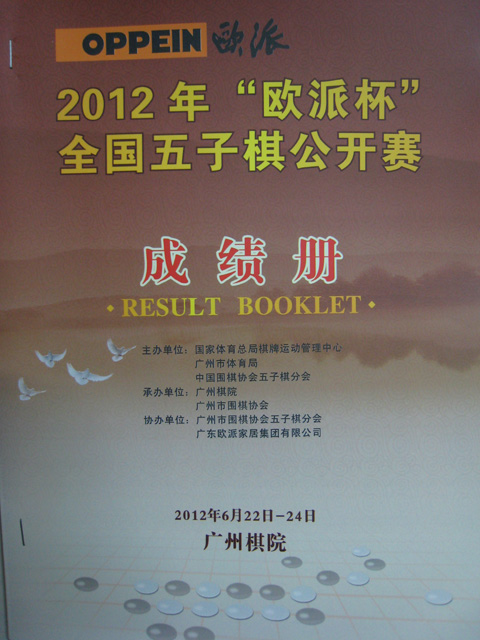
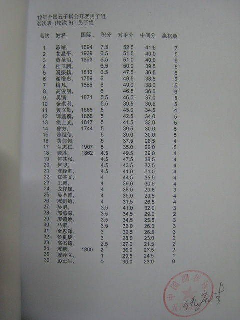
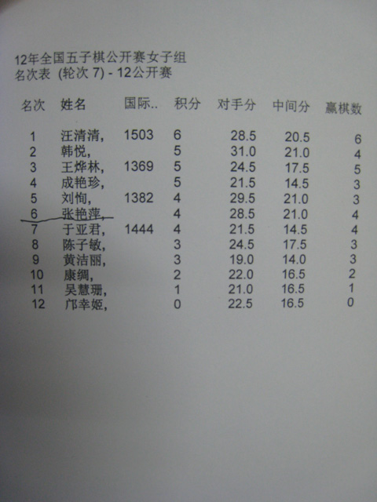

2012年“欧派杯”全国五子棋公开赛成绩册（附电子版）
#1 2012年“欧派杯”全国五子棋公开赛成绩册（附电子版） 作者：无尽 发表时间：2012-6-24 20:53:23



名次 姓名 国际.. 积分 对手分 中间分 赢棋数
1 陈靖, 1894 7.5 52.5 41.5 7
2 艾显平, 1939 6.5 51.5 40.0 5
3 黄圣明, 1863 6.5 51.0 40.0 6
4 杜卫鹏, 6.5 50.0 39.5 5
5 奚振扬, 1813 6.5 47.5 36.5 6
6 谢增忠, 1759 6 49.5 38.5 5
7 梅凡, 1866 6 49.0 38.0 5
8 高俊明, 6 46.5 36.0 6
9 吴镝, 1871 5.5 46.5 37.0 5
10 金洪利, 5.5 39.5 30.5 5
11 黄立勤, 1865 5 45.0 34.5 4
12 谭鑫麟, 1868 5 42.5 34.0 5
13 洪士光, 1817 5 41.5 32.0 5
14 曾方, 1744 5 39.5 30.0 5
15 陈祖信, 5 39.0 30.0 5
16 黄甸甸, 5 37.5 28.5 4
17 兰志仁, 1907 5 35.0 29.0 5
18 龚胜, 1862 4.5 49.5 39.0 4
19 何其强, 4.5 47.5 36.5 4
20 何骏, 4.5 43.5 32.5 4
21 陈经辉, 4.5 41.0 31.5 4
22 江齐文, 4 44.5 35.5 4
23 王鹏, 4 39.0 30.5 4
24 龙梓锋, 4 38.0 29.5 3
25 吴圣仰, 4 35.0 29.5 4
26 陈凯迪, 4 31.5 26.5 4
27 吴博, 3.5 41.0 32.0 3
28 郭海森, 3.5 34.5 29.0 2
29 廖镇焕, 3.5 34.5 25.5 3
30 马萧, 3.5 32.0 26.0 3
31 金恩泽, 3 32.5 26.5 3
32 侯良烺, 3 28.0 23.0 2
33 高杰琦, 2.5 27.0 21.5 2
34 陈新, 1860 2 36.0 27.5 2
35 陈泽立, 1 29.5 24.5 1
36 彭土生, 0 30.0 23.0 0
名次 姓名 国际.. 积分 对手分 中间分 赢棋数
1 汪清清, 1503 6 28.5 20.5 6
2 韩悦, 5 31.0 21.0 4
3 王烨林, 1369 5 24.5 17.5 5
4 成艳珍, 5 21.5 14.5 3
5 刘恂, 1382 4 29.5 21.0 3
6 张艳萍, 4 28.5 21.0 4
7 于亚君, 1444 4 21.5 14.5 4
8 陈子敏, 3 24.5 17.5 3
9 黄洁丽, 3 19.0 14.0 3
10 康绸, 2 22.0 16.5 2
11 吴慧珊, 1 21.0 16.5 1
12 邝幸姬, 0 22.5 16.5 0
［此帖子已被 无尽 在 2012-6-24 20:58:20 编辑过］
［ 岑小鱼 于 2012-6-24 21:14:51 时花20金币送鲜花一朵］
［ 西北狼梦魂 于 2012-6-24 21:54:48 时花20金币送鲜花一朵］
［此帖子已被 无尽 在 2012-6-24 22:54:24 编辑过］
［ 雅山看黄昏 于 2012-6-25 17:59:33 时花20金币送鲜花一朵］
［ 雅山看黄昏 于 2012-6-25 17:59:33 时花20金币送鲜花一朵］
［ 雅山看黄昏 于 2012-6-25 17:59:33 时花20金币送鲜花一朵］
［此帖子已被 无尽 在 2012-6-25 21:54:56 编辑过］
#2 Re:2012年“欧派杯”全国五子棋公开赛成绩册 作者：掌棋如烟 发表时间：2012-6-24 21:01:29
小白怎么出溜到第三去了,你个气死人的#3 Re:2012年“欧派杯”全国五子棋公开赛成绩册 作者：冰雪笑醉 发表时间：2012-6-24 21:10:00
张艳萍是哪个啊，长啥样，有没有特写#4 Re:2012年“欧派杯”全国五子棋公开赛成绩册 作者：黄药师 发表时间：2012-6-24 21:19:32
祝贺道道！！！！！！！！#5 Re:2012年“欧派杯”全国五子棋公开赛成绩册 作者：掌棋如烟 发表时间：2012-6-24 21:56:02
女子成绩单肿么木有公章....无效,重新比
#6 Re:2012年“欧派杯”全国五子棋公开赛成绩册 作者：乐0909 发表时间：2012-6-24 21:59:57
恭喜,恭喜...
#7 Re:2012年“欧派杯”全国五子棋公开赛成绩册 作者：小小亦默 发表时间：2012-6-24 22:13:35

#8 Re:2012年“欧派杯”全国五子棋公开赛成绩册 作者：淡红的秋樱 发表时间：2012-6-24 22:51:21
恭喜道道
#9 Re:掌棋如烟【==Re:2012年“欧派杯”全国五子棋公开赛成绩册==】 作者：萧翎 发表时间：2012-6-24 23:22:08
偶已经很满意了。［ wuxiao 于 2012-6-25 10:02:43 时花20金币送鲜花一朵］
［ wuxiao 于 2012-6-25 10:02:43 时花20金币送鲜花一朵］
［ wuxiao 于 2012-6-25 10:02:43 时花20金币送鲜花一朵］
［ wuxiao 于 2012-6-25 10:02:43 时花20金币送鲜花一朵］
［ wuxiao 于 2012-6-25 10:02:43 时花20金币送鲜花一朵］
#10 Re:2012年“欧派杯”全国五子棋公开赛成绩册（附电子版） 作者：尕孩 发表时间：2012-6-25 0:44:33
這又會是一個新的開始…#11 Re:萧翎【==Re:掌棋如烟【==Re:2012年“欧派杯”全国五子棋公开赛成绩册==】==】 作者：tears 发表时间：2012-6-25 1:01:47
引用：
原文由 萧翎 发表于 2012-6-24 23:22:08 :
偶已经很满意了。
偶不满意......
另外，这个电子版跟照片上的不一样啊~
#12 Re:2012年“欧派杯”全国五子棋公开赛成绩册（附电子版） 作者：五子酷 发表时间：2012-6-25 8:35:43
高俊明和韩悦是谁？#13 Re:2012年“欧派杯”全国五子棋公开赛成绩册（附电子版） 作者：柔柔春风醉 发表时间：2012-6-25 8:42:34
祝贺#14 Re:2012年“欧派杯”全国五子棋公开赛成绩册（附电子版） 作者：棋心愉悦飘雪 发表时间：2012-6-25 9:02:37

#15 Re:tears【==Re:萧翎【==Re:掌棋如烟【==Re:2012年“欧派杯”全国五子棋公开赛成绩册==】==】==】 作者：无尽 发表时间：2012-6-25 21:55:42
恩，更正了~ 因为我的不是正版
#16 Re:五子酷【==Re:2012年“欧派杯”全国五子棋公开赛成绩册（附电子版）==】 作者：无尽 发表时间：2012-6-25 21:56:18
引用：
原文由 五子酷 发表于 2012-6-25 8:35:43 :
高俊明和韩悦是谁？
歌剧院的幽灵&寒月